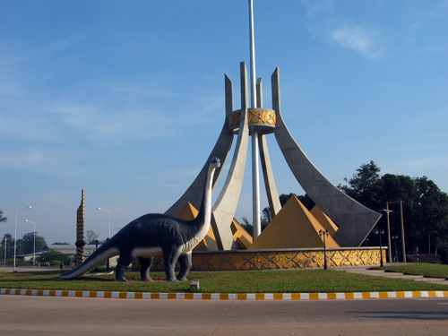

ສະຫວັນນະເຂດ ຜືນແຜ່ນດິນຄຳ
ວັດທະນນທຳ ຫຼາຍຜົ່າຊົນລ້ຳເລີດ
ແຫຼ່ງກໍ່ເກີດ ໄດໂນເສົາຮ້ອຍລ້ານປີ
ປູສະນີສະຖານ ພະທາດອີງຮັງງາມສະຫງ່າ
ໂສມນາມວ່າ ຖິ່ນກຳເນີດວິສະບູລຸດແຫ່ງຊາດລາວ
ປະຫວັດສາດຂອງສະຫວັນນະເຂດເລີ່ມໃນສະໄຫມຂອມ ເຮືອງອຳນາດ ເມືອງນີ້ຊື່ວ່າ ເມືອງສຸວັນນະພູມປະເທດ ເປັນເມືອງ ທີ່ອຸດົມສົມບູນດ້ວຍຊັບພະຍາກອນທຳມະຊາດໃນປີ ຄສ 1577 ທ້າວຫລວງ ແລະ ນາງສິມ ໄດ້ອົບພະຍົກຜູ້ຄົນຈາກພາກເຫນືອລົງມາຕັ້ງຫມູ່ບ້ານຊື່ວ່າ ຫລວງໂພນເມືອງສິມ ຫ່າງຈາກຕົວເມືອງ ປະຈຸບັນປະມານ 18 ກິໂລແມັດ ເສັ້ນທາງດຽວ ກັບໄປພະທາດອີງຮັງ ເມື່ອເຖິງປີ ຄສ 1642 ທ້າວ ສິມພະລີ (ລູກຊາຍ) ໄດ້ພາຊາວບ້ານຫລາຍສິບຄອບຄົວແຍກອອກໄປຕັ້ງເມືອງໃຫມ່ ໃນເຂດສະຫວັນນະເຂດເອີ້ນວ່າ ບ້ານທ່າແຮ່ ເພາະອຸດົມສົມບູນດ້ວຍແຮ່ທາດຕ່າງໆ ຈົນເຖິງປີ ຄສ 1919 ເມື່ອລາວຕົກເປັນອານານິຄົມ ຝັ່ງໄດ້ຕັ້ງສຳນັກງານ ຜູ້ວ່າລາຊະການແຜ່ນດິນປະຈຳແຂວງຢູ່ ທ່າແຮ່ ແລະຕັ້ງຊື່ໃຫ້ໃຫມ່ເປັນ "ສະຫວັນນະເຂດ".

+ທີ່ຕັ້ງ
ແຂວງສະຫວັນນະເຂດ ຕັ້ງຢູ່ໃນເສັ້ນຂະໜານທີ 16°C, 0.5” ໃຕ້ - 17°C, 07” ເໜືອ ແລະ ເສັ້ນແວງທີ
104°C, 3.6” ຕາເວັນຕົກ 106°C, 7.2” ຕາເວັນອອກ, ມີເນື້ອທີ່ 2,177,400 ເຮັກຕາ ແລະ ມີເຂດແດນຕິດຈອດກັບແຂວງ ແລະ ປະເທດໃກ້ຄຽງຄືດັ່ງນີ້ :
ທິດເໜືອຕິດກັບແຂວງຄຳມ່ວນ ຍາວເຖິງ 314 ກມ.
ທິດໃຕ້ຕິດກັບແຂວງສາລະວັນ ຍາວເຖິງ 259 ກມ.
ທິດຕາເວັນອອກຕິດກັບ ສ.ສ.ຫວຽດນາມ ຍາວ122 ກມ.
ທິດຕາເວັນຕົກຕິດກັບຣາຊະອານາຈັກໄທ ຍາວ 152 ກມ
ແຂວງສະຫວັນນະເຂດ ໄດ້ແບ່ງອອກເປັນສອງເຂດໃຫຍ່ຄື: ເຂດທົ່ງພຽງກວມ 59% ແລະ ເຂດພູພຽງກວມ 41%(ແບ່ງຕາມລະດັບສູງຈາກນ້ຳທະເລ). ເຂດທົ່ງພຽງແບ່ງອອກເປັນອີກສອງເຂດຄື:
ເຂດທົ່ງພຽງສ່ວນທີ່ລຽບຕາມລຳແມ່ນໍ້າຂອງ ກວມເອົາ 04 ເມືອງຄື: ເມືອງໄຊບູລີ, ເມືອງໄກສອນ ພົມວິຫານ, ເມືອງໄຊພູທອງ ແລະ ສອງຄອນ, ເປັນເຂດທີ່ອຸດົມສົມບູນດ້ວຍເຂົ້າປາອາຫານເປັນແຫລ່ງການຜະລິດເຂົ້າ, ພືດຕະກູນ ຖົ່ວແລະລ້ຽງສັດ(ສັດປີກ,ສັດໃຫຍ່ ແລະ ປາ) ເຊີ່ງມີຄວາມ ສູງຈາກລະດັບນ້ຳທະເລແຕ່ 140 ຫາ 180 ແມັດ.
ສ່ວນເຂດທົ່ງພຽງທີ່ຕັ້ງຢູ່ໃຈກາງລະຫວ່າງເຂດພູພຽງ ກັບທົ່ງພຽງລຽບນ້ຳຂອງນັ້ນ ກວມເອົາ 06 ເມືອງຄື: ເມືອງອຸທຸມພອນ, ອາດສະພັງທອງ, ພະລານໄຊ, ເມືອງຈຳພອນ,ຊົນນະບູລີ ແລະ ອາດສະພອນ, ເຂດນີ້ ເປັນເຂດທີ່ປູກເຂົ້າ, ປູກພືດອຸດສາຫະກຳ ແລະ ລ້ຽງສັດໃຫຍ່(ງົວຄວາຍ) ເຊີ່ງມີຄວາມສູງຈາກລະດັບນ້ຳທະເລແຕ່ 180 ຫາ 200 ແມັດ.
ສ່ວນວ່າເຂດພູພຽງກວມເອົາ 05 ເມືອງປະກອບມີ: ເມືອງນອງ,ເຊໂປນ,ວິລະບູລີ, ພີນ ແລະ ທ່າປາງທອງ ເປັນເຂດລໍ່ລ້ຽງໃຫ້ຄວາມຊຸ່ມຊື່ນໃຫ້ເຂດທົ່ງພຽງ, ເໝາະສົມໃນການປູກ ໄມ້ໃຫ້ໝາກ, ພຶດອຸດສາຫະກຳ ແລະ ລ້ຽງສັດ ໃຫຍ່ທຸກໆປະເພດ, ເຂດນີ້ມີຄວາມສູງຈາກລະດັບໜ້ານ້ຳທະເລແຕ່ 200 ຫາ 1.000 ແມັດ.